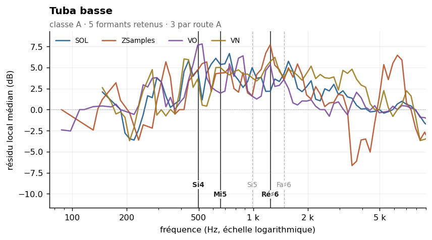

Bass tuba
Sommaire › Les cuivres
| Classe | Provenance | Échantillons | Tessiture | Formants établis |
|---|---|---|---|---|
| A | IRCAM | 108 | F | 3 |
| Formant | Note | Corpus | Localisation |
|---|---|---|---|
| 498 Hz | Si4 | VO ZSamples | |
| 659 Hz | Mi5 | SOL ZSamples VN | |
| 1244 Hz | Ré♯6 | VN ZSamples |

Pas de carte vocalique. un seul maximum survit dans 24 cellules sur 32 : il n'y a pas de couple (F1, F2) à lire. Ce n'est pas un défaut de mesure : l'instrument sort du triangle vocalique par le bas.
Statut des formants — révision du 26/10/2026
Confrontation des cinq corpus. Provenance de ce corpus : IRCAM (FullSOL2020).
Formant Statut 466 Hz indéterminé — concordance à un demi-ton avec ZSamples mais aucun couple au même point de grille. Environ une concordance sur quatre à ce seuil est fortuite. 659 Hz route A — VN + ZSamples au même point de grille, 698 Hz · zone vue par SOL, VN, ZSamples. ⚠ La valeur de cette fiche, 659 Hz, est à -1.0 demi-ton du couple : c'est 698 Hz qui est établi 987 Hz présent dans le seul corpus SOL 1479 Hz présent dans le seul corpus SOL
etendue_residudans l'en-tête n'est pas une largeur de bande : c'est l'étendue du résidu de la méthode 8, souvent une butée de plage. Les largeurs mesurées sont dans_LARGEURS-DE-BANDE.md.
Méthode 8 — quatre formants retenus, aucun rejeté. Voir
00-METHODE.md.
Classe A, ρ = 0,44. Conditions de mesure excellentes : 108 échantillons, une médiane de 85 harmoniques par note avec un minimum de 31, une tessiture (46 à 349 Hz) presque entièrement sous la limite de validité des méthodes à ordre fixe, une pente très régulière (σ = 2,6 dB/octave) et une enveloppe vraie stable (280 Hz, σ = 110 Hz).
C'est, avec le trombone ténor, le second cuivre dont les quatre candidats passent tous les deux tests. Et c'est l'instrument des cuivres dont les résidus sont les plus forts : jusqu'à +5,8 dB à 659 Hz.
| Zone | Résidu | Largeur −3 dB | Notes distinctes | Verdict |
|---|---|---|---|---|
| 466 Hz | +4,0 dB | 329–3 517 Hz | 8 | retenu |
| 659 Hz | +5,8 dB | 415–1 863 Hz | 11 | retenu |
| 987 Hz | +3,7 dB | 329–3 726 Hz | 18 | retenu |
| 1 479 Hz | +4,3 dB | 329–3 320 Hz | 25 | retenu |
| Zone | k = 2–3 | k = 4–7 | k = 8–15 | k ≥ 16 | Robustesse |
|---|---|---|---|---|---|
| 466 Hz | +4,2 | +4,4 | +5,8 | — | oui |
| 659 Hz | +6,5 | +5,8 | +5,8 | — | oui |
| 987 Hz | +5,4 | +3,7 | +4,7 | +3,6 | oui |
| 1 479 Hz | — | +5,6 | +3,2 | +4,5 | oui |
Les quatre formants sont stables sur tous les groupes de rang disponibles, sans changement de signe. Le cas de 659 Hz est le plus net du corpus des cuivres : résidu entre +5,8 et +6,5 dB sur trois groupes consécutifs, avec une bande à −3 dB relativement circonscrite (415–1 863 Hz).
Les positions (466, 659, 987, 1 479 Hz) sont approximativement dans les rapports 1 : 1,41 : 2,12 : 3,17, soit des intervalles proches de la quarte augmentée et de l'octave. À examiner comme possible série de modes.
| Descripteur | Valeur | Lecture |
|---|---|---|
| Pente spectrale médiane | −17,1 dB/octave (σ 2,6) | régulière |
| Harmoniques par note | 85 [31–90] | quasi au plafond de mesure |
| Balance impair − pair | −4,7 dB | la plus négative des cuivres |
| Enveloppe vraie (méthode 6) | 280 Hz, σ 110 | stable |
La balance de −4,7 dB est la plus négative de la famille : le tuba basse privilégie nettement les harmoniques pairs. Associée à une pente de −17,1 dB/octave, c'est la description d'un son plein et rond, qui concentre son énergie dans les premiers partiels pairs.
| Source | Valeur annoncée | Notre mesure | Accord |
|---|---|---|---|
| Backus (1969) | 200–400 Hz | env. vraie 280 Hz | bon |
| Meyer (2009) | 210–250 Hz, /u/ | env. vraie 280 Hz | bon |
| Giesler (1985) | 200–350 Hz, u-ähnlich | env. vraie 280 Hz | bon |
Ancien pipeline specenv |
F1 = 226 Hz, /u/ | env. vraie 280 Hz | proche |
| Ancien Fp | 1 239 Hz | formant retenu 1 479 Hz | proche |
Les trois sources classiques s'accordent et sont confirmées par l'enveloppe vraie à 280 Hz. L'ancien F1 de 226 Hz en était proche, et son rapport au milieu géométrique de la tessiture valait 2,00 — signe qu'il mesurait bien une résonance et non la hauteur médiane. Comme pour le cor et les trombones, les anciennes valeurs des cuivres graves étaient donc globalement justes, la méthode étant valide dans ce registre.
Les formants à 466, 659 et 987 Hz sont inédits : aucune source ne les mentionne, les mesures classiques s'étant concentrées sur la zone la plus grave.
Data/registres.md, entrée commune « tubas » : extrême grave en dessous de F1 · grave F1–F2 ·
médium F2–F3 · aigu F3–D4 · suraigu au-dessus de D#4.
Mesure par registre : non effectuée.
Note sur l'ancienne analyse par registre : elle donnait F1 = 215 Hz au grave et 205 Hz au médium, puis 280 Hz à l'aigu et 334 Hz au suraigu. La « convergence exacte Δ = 0 Hz » avec le violoncelle suraigu et avec la flûte grave reposait donc sur des rencontres de zones de fondamentale entre instruments de tessitures très différentes.
Rang du formant dans son propre spectre : 50 % signifie que les deux méthodes ne s'accordent pas mieux là qu'ailleurs. Voir ../_APPARIEMENT-LPC.md.
| Formant | Statut | Rang |
|---|---|---|
| 498 Hz | route A | 12,9 % |
| 659 Hz | route A | 87,1 % |
| 987 Hz | 1 corpus | 87,1 % |
| 1244 Hz | route A | 74,2 % |
| 1479 Hz | 1 corpus | 71,0 % |
Part de pics non localisables — l'enveloppe n'y redescend pas de 3 dB des deux côtés, donc le formant n'a pas de largeur mesurable. Voir ../_LARGEUR-PAR-REGISTRE.md.
| doux | moyen | fort | |
|---|---|---|---|
| tous registres | 51 % | 47 % | 60 % |
| grave | 39 % | 34 % | 68 % |
| médium | 78 % | 82 % | 79 % |
| aigu | — | 54 % | 18 % |
Effet doux → fort : -9 points. Elle se dégrade en jeu fort — comportement inverse de celui des trombones et de la trompette.
20 paires calculées. Fusion moyenne : 24 %. Voir ../_MELANGES.md.
| Couleur nouvelle avec | Se fond avec | ||
|---|---|---|---|
| Trompette en Ut | 89 % | Flûte contrebasse | 79 % |
| Hautbois | 67 % | Tuba contrebasse | 72 % |
| Trombone basse | 49 % | Clarinette en Mib | 67 % |
À compléter. Éléments acquis :
Aucun à ce stade. Figures prévues dans ../Versions-html-and-docx/media/ :
| Fichier prévu | Contenu |
|---|---|
tuba_basse_composite.png |
enveloppe composite — quatre formants retenus |
tubas_pupitre.png |
superposition tuba basse / tuba contrebasse |
graves_convergence.png |
figure inter-familles : tuba basse 659 Hz, contrebasson 698 Hz |
unisson_226_ecarte.png |
figure méthodologique : les trois anciens F1 à 226 Hz contre les formants réels |
La dernière figure a une valeur pédagogique : elle montre comment trois valeurs dans un même bin de FFT peuvent produire une « convergence parfaite » entièrement artificielle.